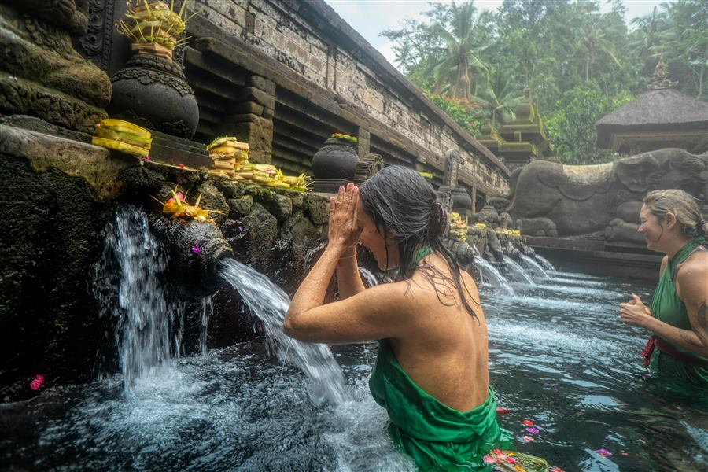
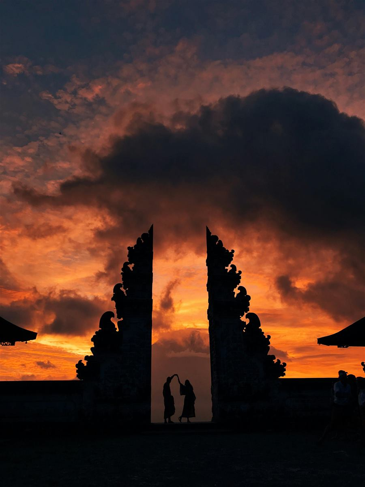
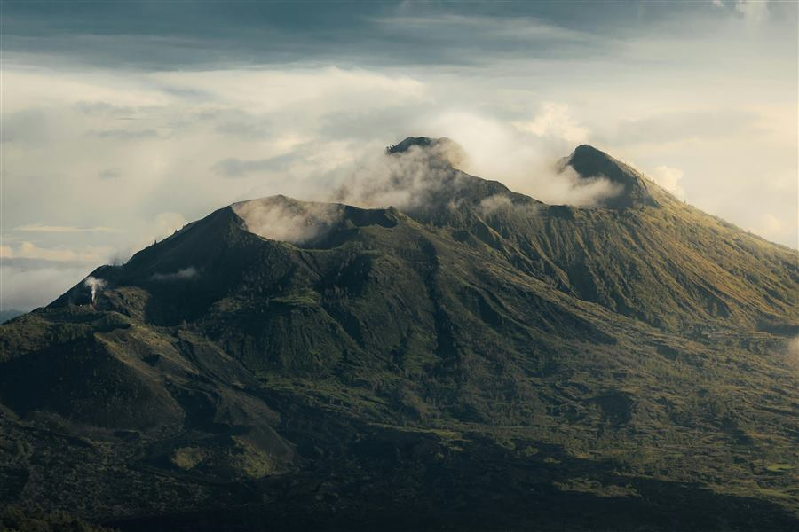
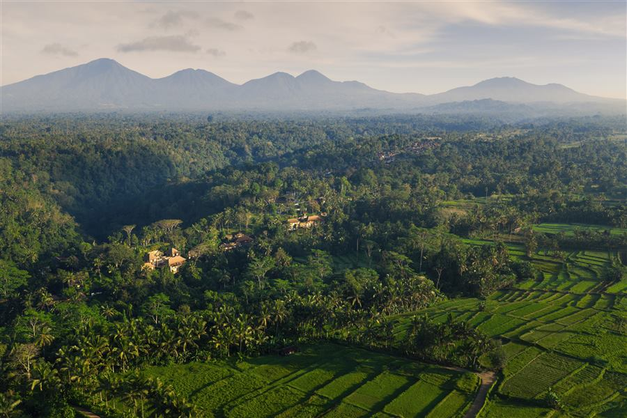

Ceremonia privada
Melukat con sumo sacerdote en Tirta Empul
El templo entero para ti, antes del primer turista.
Una selección de las experiencias más extraordinarias que Indonesia puede ofrecer. Acceso privado, ceremonias reales, islas descubiertas por nuestros partners locales, encuentros que no aparecen en ninguna guía. Para quienes ya han estado en todas partes y aún buscan algo irrepetible.
Bali no es una isla: es un estado mental. Arrozales escalonados, templos de agua, ceremonias que no se detienen nunca, acantilados sobre el Índico. La versatilidad perfecta para un primer viaje o para volver una y otra vez.

El templo entero para ti, antes del primer turista.

El Monte Agung enmarcado entre las puertas, sin colas.

Las calderas abiertas bajo tus pies. El Índico al horizonte.

Mesa única en un rincón oculto, el volcán al fondo.

Cócteles a bordo, bendición balinesa con el sol cayendo.

El referente absoluto del wellness en Indonesia.
La isla más poblada del mundo también es la que guarda los templos más grandes. Borobudur y Prambanan sobreviven desde el siglo VIII rodeados de volcanes activos, palacios sultanales y paisajes cinematográficos. Java es intensidad cultural.

Antes del primer autobús. Con antropólogo residente.

El mandala cósmico del siglo VIII, visto desde arriba.

Gases que arden eléctricos. Y al alba, el lago turquesa.

4x4 cruzando una caldera lunar. Cinco volcanes al amanecer.

Un anfiteatro de agua a 120 metros, a la sombra del Semeru.

Java entera por la ventana, vagón privado, servicio butler.
El archipiélago del este: islas que emergen del mar como joyas geológicas, playas rosas, el reptil más antiguo del planeta, y tres lagos volcánicos que cambian de color sin que la ciencia sepa explicar del todo por qué. Se recorre mejor en velero tradicional.

Velero tradicional Bugis. Cada amanecer, una bahía distinta.

Una de las siete playas rosas del mundo, solo para ti.

Tres bahías en media luna, blanca, negra y rosa.

Tres metros de prehistoria. La lengua probando el aire.

Turquesa, esmeralda, negro rojizo. Sin explicación científica.

UNESCO. Siete casas Manggarai escondidas a 1.200m.
La parte indonesia de Borneo es una de las selvas tropicales más antiguas del planeta — 140 millones de años. Orangutanes salvajes, ríos sin fondo que se navegan en klotok, pueblos Dayak con tradiciones que casi nadie de fuera ha visto. Para quien busca Indonesia en estado absolutamente puro.

Orangutanes a metros. La selva más biodiversa del planeta.

Millones de luciérnagas sincronizadas iluminando las palmeras.

Hongos luminiscentes, tarsiers, tarántulas. Otro mundo.

Longhouses comunales. Sape. Tatuajes intrincados.

Pabellones elevados. La selva como banda sonora permanente.
El archipiélago con más biodiversidad marina del planeta — 75% de todas las especies de coral conocidas, 1.600 especies de peces, el único lugar del mundo donde se puede nadar con tiburones ballena residentes todo el año. Remoto, exclusivo y todavía pristino.

Máximo 40 huéspedes. 165 km del puerto más cercano.

La inmersión más densa de vida marina del planeta.

El sello visual de Raja Ampat — inalcanzable desde tierra.

Plumaje imposible. Danza ritual. Solo aquí, en el mundo.

12 metros de gigante dócil. Residentes todo el año.

Itinerario a medida. Fondeos en bahías desiertas.
Las islas al este de Bali han mantenido todo lo que Bali ha perdido: ritmo pausado, playas desiertas, tradiciones vivas. Sumba es territorio animista con ceremonias megalíticas y el mejor hotel del mundo. Lombok es el paraíso alternativo al que Bali aspiraba a ser.

567 hectáreas, 28 villas dispersas. No AI. No filters.

La izquierda legendaria. Solo para huéspedes de NIHI.

Vírgenes. Sin nombre en el mapa turístico.

Una pieza puede tardar un año. Tinte natural, telar de cintura.

Lo que cuesta cuatro días a pie, en una sola mañana.

Salida al amanecer. Brunch en casa familiar dos horas después.
Estas son solo algunas de las experiencias que diseñamos para nuestros viajeros. Cuéntanos cuál te ha llamado la atención y construimos tu viaje a Indonesia a partir de ahí.
Diseña tu viaje